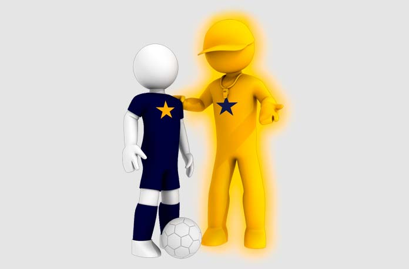

Academia
|Inicio|
MODELO PEDAGOGICO
El talento no es un regalo de la genética, sino una conquista del esfuerzo.Conseguimos que nuestros alumnos alcancen su máximo potencial, inspirándoles para que lleguen a entender el juego del fútbol y sepan jugar de forma inteligente, con capacidad de ver, entender, decidir y ejecutar bien y rápido. ¿Pero cómo llegamos a desarrollar estas habilidades?
Para encontrar el talento no debemos buscar al principio, sino al final del proceso. Las habilidades emergen y se desarrollan como consecuencia de exponer las capacidades genéticas (los dones innatos para el fútbol) al entrenamiento, la práctica y el aprendizaje inteligente, teniendo en cuenta lo mucho que influyen los catalizadores -positivos o negativos- que aceleran o inhiben el proceso de adquisición de competencias.
Hay catalizadores externos, como el entorno del jugador, su familia o su país de origen. Y hay catalizadores internos, es decir intrapersonales. Se trata de la conciencia que tiene el alumno de sus fortalezas y debilidades, y de su capacidad de verse a sí mismo con realismo: ¿Quién soy? ¿Cómo soy? ¿Qué quiero? Aquí entran en juego la inteligencia emocional, la actitud positiva, la autoestima y los valores.
Para canalizar todos estos elementos hacia el desarrollo del talento hace falta un modelo pedagógico enfocado en el alumno. Por eso, los profesores de Marcet no enseñan, sino que iluminan al jugador para que llegue a sus propias conclusiones y aprenda por sí mismo. En otras palabras, el alumno tiene que aprender a aprender (metacognición), ya que en su proceso hacia el talento no siempre podrá tener un profesor a su lado. Cualquier acción en la que se implique (partidos, entrenamientos, experiencias vitales) sirve para que sea capaz de progresar en su camino hacia su máximo potencial.
Neurofutbol
El método Marcet es un proceso cognitivo basado en la neurociencia que consta de 11 pasos:
- Identificación. Reconocer las competencias, conocimientos, actitudes y valores que dentro de 10 años los directores deportivos y dirigentes de los clubes profesionales de las mejores ligas de fútbol de Europa Occidental van a exigir a los jugadores para contratarlos. Esta identificación es fruto de un trabajo continuado, por lo que se actualiza constantemente a medida que se identifican cambios sustantivos en la realidad investigada.
 - Ponderación. Determinamos para cada una de las competencias, conocimientos, habilidades y valores identificados un peso específico en relación con la especialidad y posición en el campo de cada jugador.
- Desglose. Para facilitar el aprendizaje y la evaluación, las competencias, conocimientos, habilidades y valores identificados se desglosan y diseccionan en comportamientos muy concretos y detallados, de tal manera que el profesor y el evaluador solo tienen que constatar si el alumno hace algo o no lo hace y en qué grado de intensidad (nunca, a veces, muchas veces, siempre).
- Evaluación Matrix inicial. Determina la situación y nivel real del alumno en cada una de las competencias, conocimientos, habilidades y valores en su proceso de aprendizaje.
- Determinación de los objetivos personalizados para cada alumno. Se decide conjuntamente (alumno- profesor) qué competencias, conocimientos, habilidades y valores queremos que mejore y adquiera cada alumno concreto (con nombre y apellidos).
- Planificación. Determinar las estrategias personalizadas de aprendizaje. Cómo y cuándo conseguir que el alumno alcance los objetivos determinados. Programamos unas acciones formativas concretas y un plazo determinado.
- Acción. Poner en práctica la estrategia mediante ejercicios, juegos y actividades planificadas.
- Reacción. Evaluamos conjuntamente (profesor-alumno) los errores que se producen durante la acción para repetirla (reacción) con las correcciones adecuadas a las que el alumno ha llegado por sus propias conclusiones. Actúa por convencimiento, no por instrucción. El profesor Marcet solo le induce y le ilumina. Si no estamos consiguiendo que el alumno alcance los objetivos previstos, cambiaremos de inmediato -y las veces que haga falta- las estrategias planificadas por unas nuevas para amoldarnos al proceso cognitivo de cada alumno concreto.
- Evaluación Matrix. Una vez finalizado el plazo establecido para alcanzar un objetivo, se evalúa al alumno para comprobar en qué grado lo ha alcanzado. Cuando el resultado es satisfactorio, pasamos a establecer nuevos objetivos.